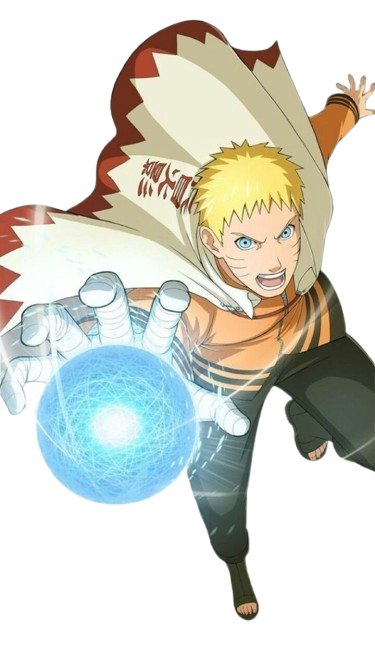
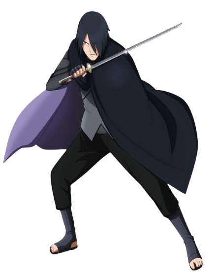
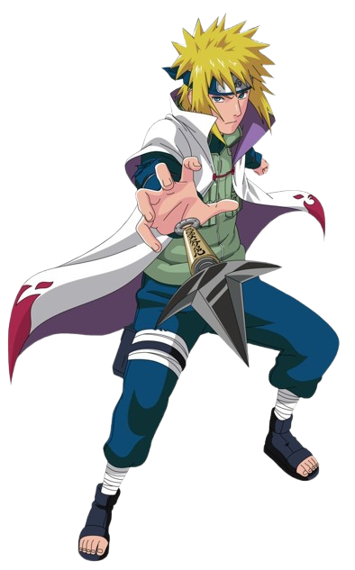
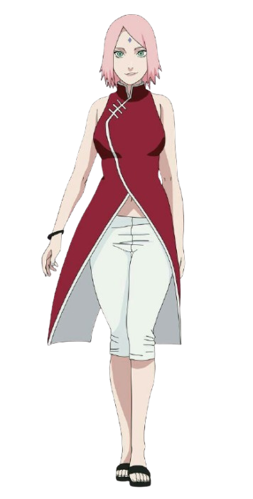
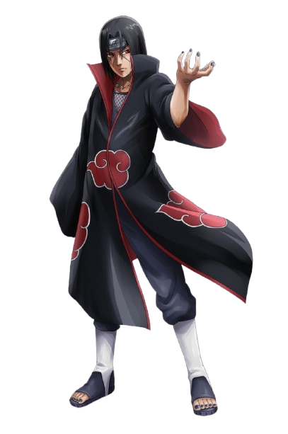

Naruto é retratado como um jovem cheio de energia e determinação, que busca reconhecimento e sonha em se tornar Hokage. Mesmo enfrentando solidão e preconceito, ele segue em frente com coragem e um espírito indomável, inspirando todos ao seu redor.

Sasuke é apresentado como um prodígio marcado pela tragédia de perder sua família. Sua vida passa a ser guiada pela busca de poder e vingança, o que o coloca entre caminhos sombrios. Apesar disso, ele carrega um conflito interno profundo e um vínculo inquebrável com seus companheiros.

Minato, o Quarto Hokage, é lembrado como um líder brilhante, calmo e estrategista. Sua força e sacrifício definem seu legado, e sua postura sábia o coloca como um dos ninjas mais respeitados da história, sendo admirado por sua coragem e compaixão.

Sakura começa como uma ninja insegura, mas cresce ao longo de sua jornada, tornando-se forte, inteligente e emocionalmente madura. Ela desenvolve grande habilidade médica e demonstra lealdade constante, equilibrando sensibilidade e determinação.

Itachi é mostrado como um ninja enigmático que carrega o peso de escolhas extremas feitas por um bem maior. Sua história é marcada por sacrifícios silenciosos, lealdade profunda e amor incondicional, especialmente por seu irmão, mesmo sendo visto como vilão por muitos.
